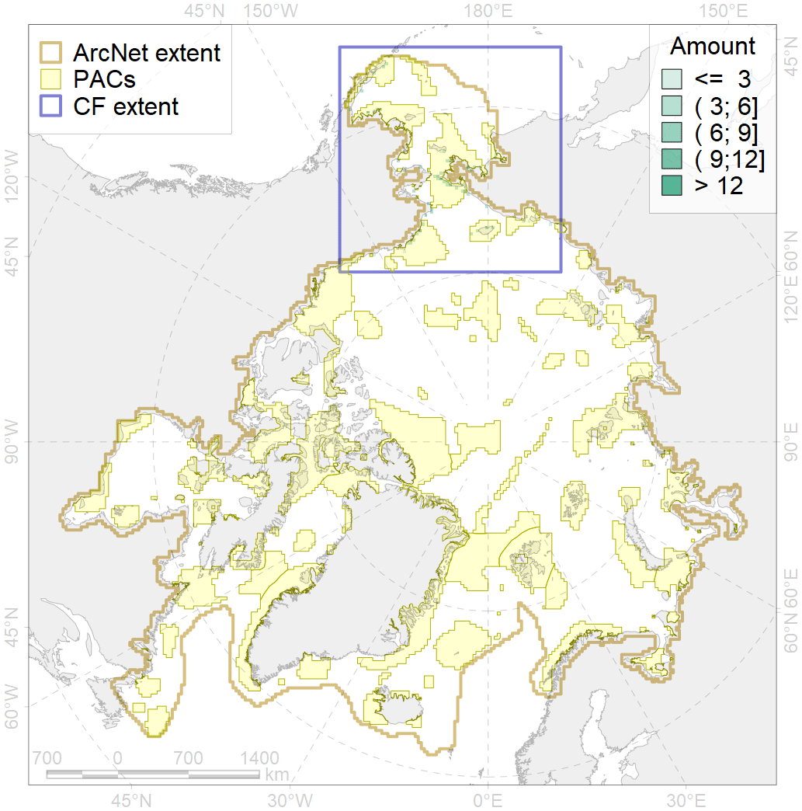
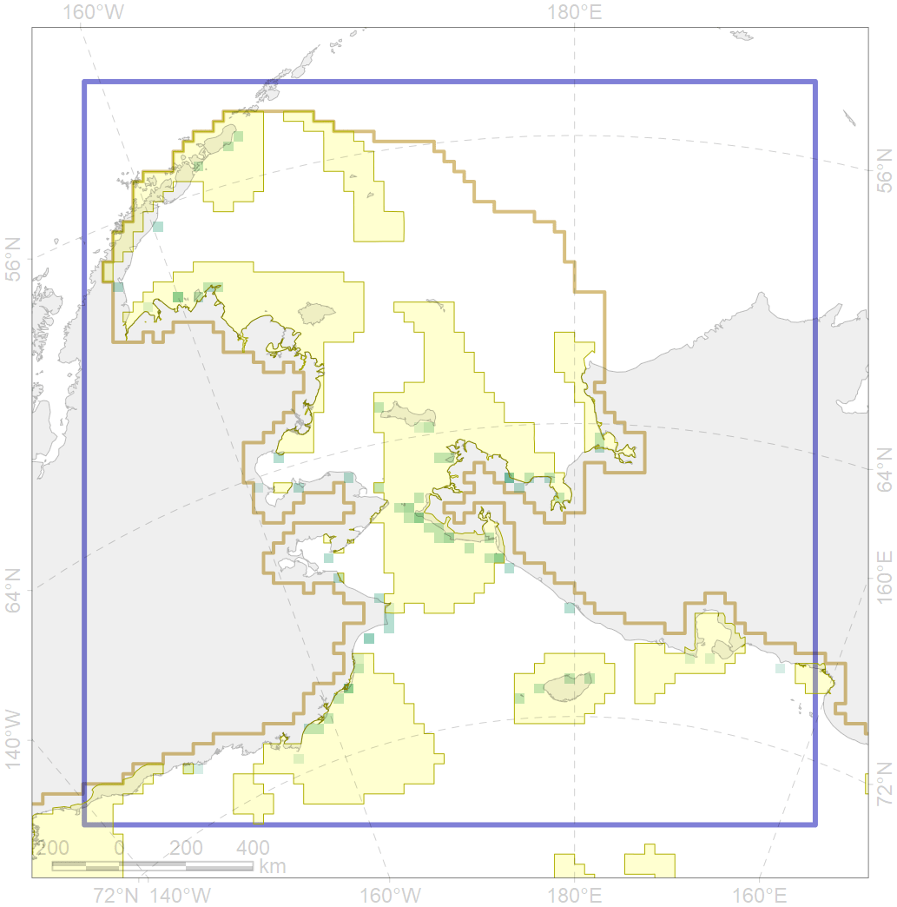

1017

| CF ID | 1017 |
| CF Name | Pacific Walrus haulouts |
| Time Period | 1852-2016 |
| Source(s) | https://pubs.usgs.gov/of/2016/1108/ofr20161108.pdf |
| Seasonality | June - September |
| Depth Horizon | > 0m |
| Methodology | Data assembled from multiple datasets |
| Author Name | Maria Solovyeva |
| Notes | |
| Conservation Target Set in the Scenario | 0.72 |
| Conservation Target Achieved in the Scenario | 0.738 (Scenario: 102.4%) |
| PAC ID | Proportion in the PAC | Contribution to ArcNet Target Achievement | PAC’s Contribution to the Achieved Target |
|---|---|---|---|
| 1 | 3.8% | 5.3% | 5.2% |
| 3 | 9.8% | 12.0% | 11.7% |
| 4 | 2.7% | 3.7% | 3.6% |
| 5 | 42.0% | 55.2% | 53.9% |
| 6 | 1.2% | 1.6% | 1.6% |
| 7 | 6.5% | 9.0% | 8.8% |
| 8 | 1.5% | 1.7% | 1.7% |
| 60 | 10.9% | 12.2% | 11.9% |
| 61 | 0.6% | 0.8% | 0.8% |
| inner | 79.0% | 101.7% | 99.3% |
| outer | 21.0% | 0.8% | 0.7% |